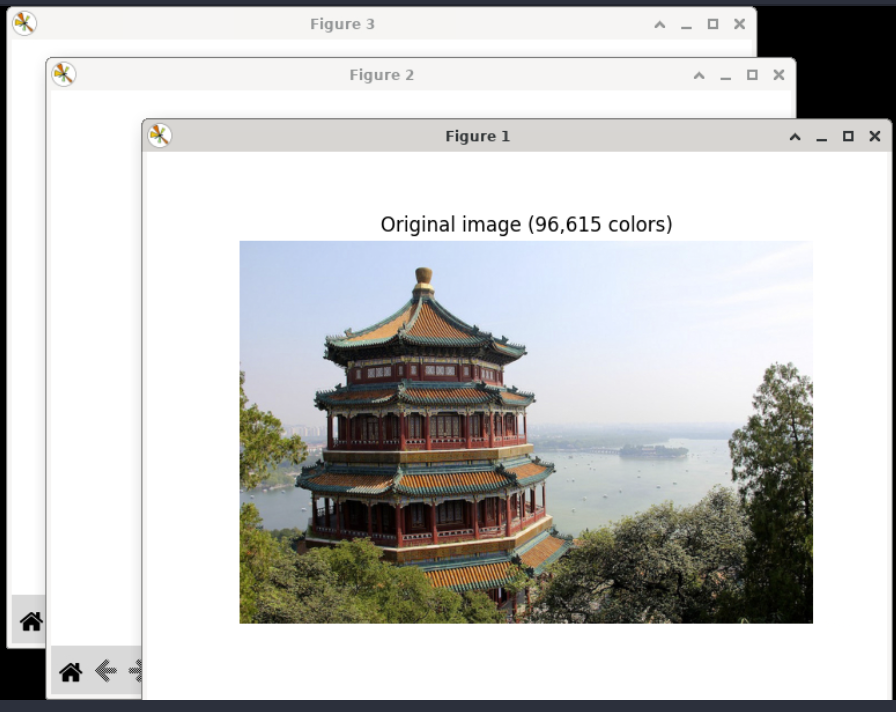

scikit-learn
scikit-learn is a machine learning library built for Python. It is built on NumPy, SciPy, and Matplotlib. It's useful for statistical problems like data classification or predicting trends.
Examples
Classification
From scikit-learn's examples (column names array has been modified for space in output window):
from sklearn import svm
X = [[0, 0], [1, 1]]
y = [0, 1]
clf = svm.SVC()
clf.fit(X, y)
# Code source: Gaël Varoquaux
# Andreas Müller
# Modified for documentation by Jaques Grobler
# License: BSD 3 clause
import numpy as np
import matplotlib.pyplot as plt
from matplotlib.colors import ListedColormap
from sklearn.model_selection import train_test_split
from sklearn.preprocessing import StandardScaler
from sklearn.pipeline import make_pipeline
from sklearn.datasets import make_moons, make_circles, make_classification
from sklearn.neural_network import MLPClassifier
from sklearn.neighbors import KNeighborsClassifier
from sklearn.svm import SVC
from sklearn.gaussian_process import GaussianProcessClassifier
from sklearn.gaussian_process.kernels import RBF
from sklearn.tree import DecisionTreeClassifier
from sklearn.ensemble import RandomForestClassifier, AdaBoostClassifier
from sklearn.naive_bayes import GaussianNB
from sklearn.discriminant_analysis import QuadraticDiscriminantAnalysis
from sklearn.inspection import DecisionBoundaryDisplay
names = [
"NN",
"Linear SVM",
"RBF SVM",
"GP",
"DT",
"RF",
"NeuralNet",
"AB",
"NB",
"QDA",
]
classifiers = [
KNeighborsClassifier(3),
SVC(kernel="linear", C=0.025),
SVC(gamma=2, C=1),
GaussianProcessClassifier(1.0 * RBF(1.0)),
DecisionTreeClassifier(max_depth=5),
RandomForestClassifier(max_depth=5, n_estimators=10, max_features=1),
MLPClassifier(alpha=1, max_iter=1000),
AdaBoostClassifier(),
GaussianNB(),
QuadraticDiscriminantAnalysis(),
]
X, y = make_classification(
n_features=2, n_redundant=0, n_informative=2, random_state=1, n_clusters_per_class=1
)
rng = np.random.RandomState(2)
X += 2 * rng.uniform(size=X.shape)
linearly_separable = (X, y)
datasets = [
make_moons(noise=0.3, random_state=0),
make_circles(noise=0.2, factor=0.5, random_state=1),
linearly_separable,
]
figure = plt.figure(figsize=(27, 9))
i = 1
# iterate over datasets
for ds_cnt, ds in enumerate(datasets):
# preprocess dataset, split into training and test part
X, y = ds
X_train, X_test, y_train, y_test = train_test_split(
X, y, test_size=0.4, random_state=42
)
x_min, x_max = X[:, 0].min() - 0.5, X[:, 0].max() + 0.5
y_min, y_max = X[:, 1].min() - 0.5, X[:, 1].max() + 0.5
# just plot the dataset first
cm = plt.cm.RdBu
cm_bright = ListedColormap(["#FF0000", "#0000FF"])
ax = plt.subplot(len(datasets), len(classifiers) + 1, i)
if ds_cnt == 0:
ax.set_title("Input data")
# Plot the training points
ax.scatter(X_train[:, 0], X_train[:, 1], c=y_train, cmap=cm_bright, edgecolors="k")
# Plot the testing points
ax.scatter(
X_test[:, 0], X_test[:, 1], c=y_test, cmap=cm_bright, alpha=0.6, edgecolors="k"
)
ax.set_xlim(x_min, x_max)
ax.set_ylim(y_min, y_max)
ax.set_xticks(())
ax.set_yticks(())
i += 1
# iterate over classifiers
for name, clf in zip(names, classifiers):
ax = plt.subplot(len(datasets), len(classifiers) + 1, i)
clf = make_pipeline(StandardScaler(), clf)
clf.fit(X_train, y_train)
score = clf.score(X_test, y_test)
DecisionBoundaryDisplay.from_estimator(
clf, X, cmap=cm, alpha=0.8, ax=ax, eps=0.5
)
# Plot the training points
ax.scatter(
X_train[:, 0], X_train[:, 1], c=y_train, cmap=cm_bright, edgecolors="k"
)
# Plot the testing points
ax.scatter(
X_test[:, 0],
X_test[:, 1],
c=y_test,
cmap=cm_bright,
edgecolors="k",
alpha=0.6,
)
ax.set_xlim(x_min, x_max)
ax.set_ylim(y_min, y_max)
ax.set_xticks(())
ax.set_yticks(())
if ds_cnt == 0:
ax.set_title(name)
ax.text(
x_max - 0.3,
y_min + 0.3,
("%.2f" % score).lstrip("0"),
size=15,
horizontalalignment="right",
)
i += 1
plt.tight_layout()
plt.show()
Will generate a window showing a plot of the data and the classificaiton fields derived from it:

Color Clustering
The following example takes a sample image and uses scikit-learn to identify clusters of colors. It then uses that cluster info to reduce the amount of colors in the image to only 64 instead of over 90,000:
# Authors: Robert Layton <robertlayton@gmail.com>
# Olivier Grisel <olivier.grisel@ensta.org>
# Mathieu Blondel <mathieu@mblondel.org>
#
# License: BSD 3 clause
import numpy as np
import matplotlib.pyplot as plt
from sklearn.cluster import KMeans
from sklearn.metrics import pairwise_distances_argmin
from sklearn.datasets import load_sample_image
from sklearn.utils import shuffle
from time import time
n_colors = 64
# Load the Summer Palace photo
china = load_sample_image("china.jpg")
# Convert to floats instead of the default 8 bits integer coding. Dividing by
# 255 is important so that plt.imshow behaves works well on float data (need to
# be in the range [0-1])
china = np.array(china, dtype=np.float64) / 255
# Load Image and transform to a 2D numpy array.
w, h, d = original_shape = tuple(china.shape)
assert d == 3
image_array = np.reshape(china, (w * h, d))
print("Fitting model on a small sub-sample of the data")
t0 = time()
image_array_sample = shuffle(image_array, random_state=0, n_samples=1_000)
kmeans = KMeans(n_clusters=n_colors, n_init="auto", random_state=0).fit(
image_array_sample
)
print(f"done in {time() - t0:0.3f}s.")
# Get labels for all points
print("Predicting color indices on the full image (k-means)")
t0 = time()
labels = kmeans.predict(image_array)
print(f"done in {time() - t0:0.3f}s.")
codebook_random = shuffle(image_array, random_state=0, n_samples=n_colors)
print("Predicting color indices on the full image (random)")
t0 = time()
labels_random = pairwise_distances_argmin(codebook_random, image_array, axis=0)
print(f"done in {time() - t0:0.3f}s.")
def recreate_image(codebook, labels, w, h):
"""Recreate the (compressed) image from the code book & labels"""
return codebook[labels].reshape(w, h, -1)
# Display all results, alongside original image
plt.figure(1)
plt.clf()
plt.axis("off")
plt.title("Original image (96,615 colors)")
plt.imshow(china)
plt.figure(2)
plt.clf()
plt.axis("off")
plt.title(f"Quantized image ({n_colors} colors, K-Means)")
plt.imshow(recreate_image(kmeans.cluster_centers_, labels, w, h))
plt.figure(3)
plt.clf()
plt.axis("off")
plt.title(f"Quantized image ({n_colors} colors, Random)")
plt.imshow(recreate_image(codebook_random, labels_random, w, h))
plt.show()
Your output will generate 3 separate windows showing the original image, the reduced color image using an average of the color clusters using K-Means, and a final image where the cluster colors are calculated by random selection:



Note
When there are multiple windows in an output in Python3 Editor, you can use your mouse to click and drag the windows around to reposition them.
Reference
- scikit-learn at scikit-learn.org